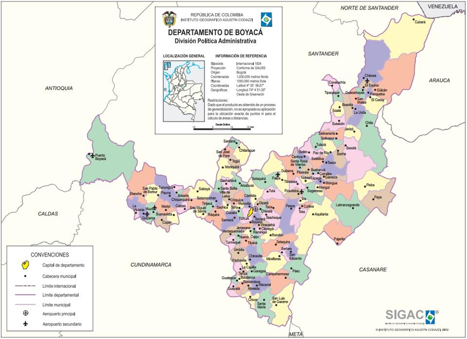

Ingeniero Civil · Exalcalde de Sutamarchán · Exdirector Departamental de Vías · Excongresista (Cámara 2022-2026)
"El Ingeniero de Soluciones Reales"
Conecta el rigor técnico de la ingeniería con la cercanía campesina y la experiencia de gestión en territorio.
38 años (Nacido el 5 de agosto de 1988 en Tunja, Boyacá).
Efectiva desde el 4 de junio de 2026. Blindó jurídicamente su aspiración al evitar inhabilidades electorales del régimen uninominal.
Lideró obras de infraestructura vial municipal y resolvió la histórica escasez de agua potable mediante la gestión e ingeniería de un pozo profundo.
En el gabinete del gobernador Ramiro Barragán dirigió la estructuración de corredores estratégicos, maquinaria y mantenimiento de vías secundarias y terciarias de Boyacá.
Elegido con 37.302 votos. Miembro de la Comisión Tercera (Hacienda y Presupuesto). Autor de 3 leyes de la República y gestor de recursos para Boyacá.
Mecanismos directos de comercialización sin intermediarios abusivos para campesinos, apoyo logístico y estabilización de precios de cosechas boyacenses.
Formación escolar y comunitaria en gestión del riesgo, mitigación climática y protección integral de páramos y cuencas hídricas departamentales.
Fondos de apoyo directo, subsidios e inclusión social y laboral para madres y familias cuidadoras en los 123 municipios.
Jefe político del sector verde mayoritario. Castellanos forma parte orgánica de su estructura institucional desde 2016. Reto: consolidar su respaldo sin generar percepción de imposición dinástica.
Expresidente de la Cámara y figura verde reelecta 2026-2030. Fuerza clave en sectores de educación y salud. Su sintonía con Castellanos garantiza estabilidad en la base partidista.
Mencionado en medios como alternativa para la Gobernación con respaldo de sectores de izquierda y Alianza Verde nacional. Reto: resolver la candidatura verde mediante encuesta o consenso sin fracturar al partido.
Perfil de alta visibilidad nacional, enfocado en seguridad, orden público, corredores logísticos y agroindustria. Atrae el voto descontento urbano y empresarial.
El candidato respaldado por el sector verde en segunda vuelta presidencial perdió en 119 de los 123 municipios de Boyacá (Junio 2026).
Este dato, reportado por Boyacá 7 Días, es la principal advertencia para 2027: existe fatiga con las etiquetas oficialistas y un electorado boyacense dispuesto a emitir votos de castigo.
Para garantizar la victoria, el War Room debe construir una mesa de diálogo multipartidista que sume a:
División Político-Administrativa Oficial (Instituto Geográfico Agustín Codazzi - IGAC)

Distribución de los 37.302 votos obtenidos por Wilmer Castellanos en 2022 frente a la cuota objetivo requerida para disputar la Gobernación de Boyacá.
| Municipio / Zona | Provincia | Votos 2022 | % de su base | Meta War Room 2027 | Prioridad Táctica |
|---|---|---|---|---|---|
| Tunja | Centro | 4.311 | 11,5% | 28.000 | Urgente |
| Sogamoso | Sugamuxi | 2.605 | 7,0% | 22.000 | Urgente |
| Chiquinquirá | Occidente | 2.125 | 5,7% | 14.000 | Alta |
| Duitama | Tundama | 1.422 | 3,8% | 18.000 | Urgente |
| Paipa | Tundama | 518 | 1,4% | 6.500 | Media |
| Garagoa | Neira | 201 | 0,5% | 4.500 | Media |
| Soatá | Norte | 158 | 0,4% | 3.500 | Media |
| Resto de Boyacá (116 Mpios) | Ricaurte, Lengupá, etc. | 25.963 | 69,6% | 113.500 | Bastión |
Ajusta los multiplicadores de penetración en las zonas urbanas y rurales para proyectar el resultado final de la campaña.
Estructura ágil inspirada en centros de inteligencia política moderna para toma de decisiones en tiempo real.
Monitoreo del censo electoral, cálculo de votos por mesa en los 123 municipios y seguimiento a la inscripción de cédulas.
Meta: Atlas Electoral Digital 24/7Gestión de medios regionales, vocería de prensa y posicionamiento de la narrativa: "El Ingeniero que Conecta a Boyacá".
Meta: 1 entrevista radial diariaMonitoreo de tendencias en X, TikTok e Instagram. Coordinación de la Red de WhatsApp Veredal para romper el algoritmo.
Meta: 500 grupos veredales activosRespuestas rápidas a fake news, control estricto de topes de financiación y carpetas probatorias de defensa contractual.
SOP: Reacción en < 90 minutosArticulación con 13 coordinadores provinciales, contacto con alcaldes, concejales y juntas de acción comunal (JAC).
Meta: 123 comités constituidosRedacción del Programa de Gobierno oficial con costeo técnico, metas fiscales, indicadores de resultado y sustento jurídico.
Entregable: Programa ante RegistraduríaProcedimiento estandarizado de actuación ante controversias mediáticas sobre contratación (Invías / Sutamarchán).
Identificar medio emisor, alcance, severidad legal y actores promotores del ataque. Clasificar en Verde, Amarillo o Rojo.
Extraer del repositorio blindado los certificados de SECOP, actas de entrega, paz y salvos y providencias judiciales.
Emitir comunicado oficial con firma de la campaña. Publicar hilo técnico en redes del candidato desmintiendo con documentos.
Difusión masiva en la Red de WhatsApp Veredal y vocería en radio regional de directores de obra y beneficiarios campesinos.
"Como Ingeniero y como servidor de Boyacá, mi deber siempre ha sido gestionar recursos para que las vías campesinas no sigan abandonadas. Todas las obras gestionadas son públicas, están en el SECOP, fueron ejecutadas técnicamente y cuentan con el aval de las comunidades. No tengo una sola sanción ni proceso condenatorio; mi mejor testigo son las obras concluidas que hoy disfrutan los campesinos de Boyacá."